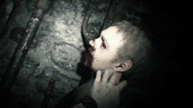
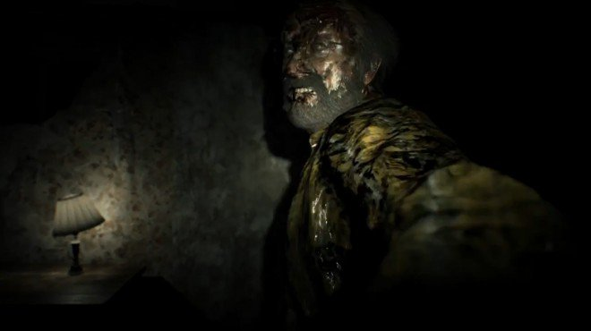
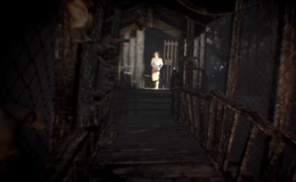
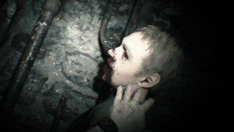
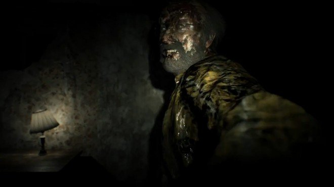
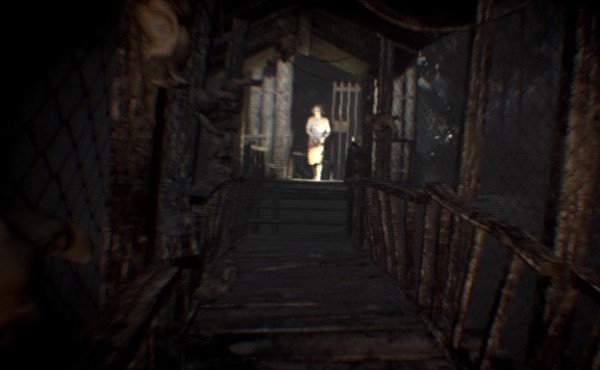

Cerchiamo di raccontarvi i primi momenti di gioco di Resident Evil senza spoilerare alcun elemento significativo. Il giocatore vestira' i panni di Ethan, protagonista della vicenda che decide di correre al salvataggio di Mia, moglie scomparsa tre anni prima ma che sembra essere ancora viva grazie alla sua presenza in un video. Ethan compie delle ricerche, le quali lo portano a villa Baker, casa abbandonata, o almeno sembra. Da qui ha praticamente inizio la vicenda, la quale inizialmente segue la stessa direzione della demo The Beginning Hour per poi cambiare strada e lanciarvi nel vivo del gioco. Sara' necessario quindi esplorare qualche stanza, guardare la videocassetta per scoprire il passaggio segreto e molto altro. Ah no, il dito mozzato questa volta non appare. Ma lo fara' in seguito. Forse.
Ci fermiamo qui. Ogni singolo momento di Resident Evil 7 merita di essere vissuto, di conseguenza non vogliamo assolutamente aggiungere dettagli che potrebbero trasformarsi in anticipazioni che potrebbero minarvi la sorpresa. Spostiamo la nostra attenzione invece sul metodo narrativo scelto dagli sviluppatori.
Come in ogni Resident Evil, la trama viene svelata goccia dopo goccia con l'avanzare dell'avventura. Disseminati per la magione sono inoltre presenti i classici documenti di approfondimento, i quali meritano assolutamente di essere letti dato che sono in grado di andare a completare il quadro della situazione grazie ad annotazioni dei vari personaggi che hanno anticipato la nostra visita.
Fin dalla sua prima presentazione, Resident Evil 7 ha dato la parvenza di essere il classico titolo che punta a far saltare il videogiocatore dalla sedia. Capcom ha pero' saputo bilanciare perfettamente la cosa e non basarsi solamente sui classici momenti in cui il nemico salta fuori dall'ombra. Ovviamente saranno presenti anche quelle situazioni, ma il vero sentimento preponderante e' quello di essere costantemente braccati da qualche sanguinario nemico. La prima run vi vedra' infatti affrontare ogni location con la paura di quello che puo' esserci dietro l'angolo.
Ottima la caratterizzazione dei personaggi. I membri della famiglia Baker sono completamente fuori di testa mentre la figura di Ethan cresce in maniera costante, con qualche piccola battuta in grado di stemperare la tragicita' del momento (epica quella con il poliziotto, n.d.SketchT). L'avventura vi portera' ad affezionarvi a determinate figure e odiarne altre. Inutile sottolineare la presenza di colpi di scena che ribalteranno le idee partorite col passare delle ore e, come se non bastasse, una scelta andra' a influenzare alcuni avvenimenti.
La longevita' di Resident Evil 7 e' allineata con la media ore delle avventure appartenenti al genere. Abbiamo terminato Resident Evil 7 in una decina di ore senza pero' andare alla ricerca di tutti i collezionabili, ma raccogliendo praticamente tutte le armi a disposizione. Facendo una stima, completare l'avventura al 100% significa spendere una quindicina di ore a livello Normale. Una volta terminato il gioco si sblocchera' la difficolta' Manicomio, caratterizzata dalla possibilita' di salvataggio solamente consumando dei nastri, in perfetto stile Resident Evil, e una IA particolarmente efferata.
 GAMEPLAY
GAMEPLAY
Come gia' sottolineato piu' volte, la modifica piu' importante presente in Resident Evil 7 e' quella della visuale. Si passa quindi dalla classica terza persona a una piu' coinvolgente prima persona, fattore ancor piu' enfatizzato se si decide di affrontare l'avventura utilizzando Playstation VR (parleremo della nostra esperienza utilizzando la realta' virtuale in seguito). Come detto in apertura, Resident Evil 7 si ispira completamente ai primi storici capitoli della saga. Oltre all'inventario limitato ad un numero di posti, ampliabile raccogliendo degli zaini ad hoc, l'avventura si basa praticamente su fasi esplorative, risoluzione di enigmi e scontri con alcuni abomini i quali assomigliano ai vari Hunter e Licker visti in precedenza. Il tutto viene reso piu' accattivante grazie alla presenza di alcuni personaggi che vi staranno costantemente alle costole, di conseguenza l'esplorazione di alcune sezioni della casa dovra' essere eseguita con particolare attenzione. Anche in Resident Evil 7 sara' necessario darsi alla pratica del backtracking. Lo zaino poco capiente costringera' il giocatore a diversi avanti e indietro dai punti di salvataggio a luoghi in cui e' necessario effettuare particolari azioni, ma lo stesso vale nel momento in cui raccoglierete determinate chiavi in grado di aprire porte impossibili da aprire in precedenza. Durante l'avventura Ethan potra' raccogliere diverse armi. Pistola, fucile, un lanciafiamme artigianale, lanciagranate e poco altro, equipaggiamento che potra' finire nelle mani del giocatore a patto di risolvere alcuni piccoli enigmi. Il vero leit motiv di Resident Evil 7 e' infatti legato alla presenza di puzzle da risolvere, in modo da avanzare nell'avventura. Alcuni si ispireranno al primo capitolo della saga, quindi alla stregua di "raccogli un tal emblema e posizionalo in quella porta", altri invece necessiteranno di utilizzare un minimo la materia grigia (mi fate sapere in quanto tempo avete terminato "il compleanno"? Grazie, n.d.SketchT). Ethan potra' imbattersi anche in scatti fotografici che svelano la posizione di oggetti da raccogliere, collezionabili da far propri e altro, come del resto saranno presenti le mappe di ogni location, chiavi in grado di aprire determinate porte e molto altro ancora. Potevano certo mancare le erbe curative? Assolutamente no. Ethan potra' utilizzare le classiche erbe verdi per riportare la sua energia vitale ad alti livelli, effetto piu' efficace se si avra' l'accortezza di combinare il tutto con degli speciali Fluidi Chimici. Lo stesso vale anche per la creazione di proiettili, i quali possono essere creati grazie alla polvere da sparo, o agli psicostimolanti, i quali fungono come una sorta di doping per i sensi del protagonista, rendendo piu' facile la localizzazione degli oggetti presenti nella location.  Per garantire un'esperienza coinvolgente, gli sviluppatori hanno optato per l'eliminazione di qualsiasi barra di energia, contatore et similia dal monitor. La visuale e' completamente pulita, di conseguenza a schermo non vedrete assolutamente niente di diverso se non le mani del protagonista e gli elementi legati all'ambientazione. L'energia vitale viene indicata da uno speciale orologio indossato da Ethan, visualizzabile premendo il tasto dedicato all'apertura del proprio zaino. Per curarsi e caricare le proprie armi viene quindi in aiuto la mappatura del pad, la quale permette con il tasto R1 di utilizzare una Soluzione Medica per curarsi, mentre i tasti direzionali permettono la scelta dell'arma. Con L2 si mira mentre con R2 si fa fuoco o si attacca, mentre con L1 ci si mette in difesa e si tenta di assorbire il colpo del nemico, in modo da evitare danni importanti. Se avete provato la demo saprete sicuramente che con R3 ci si accovaccia. Abbiamo provato a sfruttare la funzione durante i combattimenti, in modo da schivare i colpi ravvicinati del cattivo di turno. La soluzione funziona a meraviglia, a patto ovviamente che l'avversario colpisca orizzontalmente e non verticalmente. Il sistema di mira funziona egregiamente ma vi consigliamo di mettere mano alle opzioni e cercare la configurazione che piu' si adatta alle vostre esigenze. La velocita' e' infatti la chiave per non essere fatti a pezzi dai cattivi di turno, soprattutto ai livelli di difficolta' piu' elevata. Le reazioni dei nemici ai colpi inflitti e' senza dubbio convincente, ma data la scarsita' di munizioni e' necessario mirare costantemente alla testa, in modo da far fuori il nemico il piu' velocemente possibile. Questo vale ovviamente per i nemici classici. Gli scontri con i boss invece sono devi veri e propri enigmi, i quali difficilmente si possono risolvere solamente con la forza bruta. Nella maggior parte dei casi e' necessario mantenere la calma e sfruttare l'ambiente circostante. Come anticipato poco sopra, Resident Evil 7 puo' essere affrontato scegliendo tra due livelli di difficolta'. Facile e Normale. Il consiglio e' quello di iniziare subito da Normale dato che i nemici risulteranno combattivi e veloci al punto giusto, senza contare la presenza di autosave e soprattutto salvataggi infiniti. Terminando l'avventura viene sbloccata la modalita' Manicomio, sezione in cui sara' possibile salvare solamente se in possesso di nastri, alla stregua quindi dei primi Resident Evil, senza contare ovviamente un aumento della forza e della velocita' dei cattivi di turno. Manicomio e' quindi la modalita' adatta per chi e' alla ricerca di un'esperienza tutt'altro che alla portata di tutti. Quali aspetti non ci hanno convinto di Resident Evil 7? Abbiamo storto il naso di fronte ai nemici proposti. La varieta' e' infatti molto bassa, praticamente vi troverete a contrastare, a parte ovviamente i boss, creature molto simili tra loro, differenziate solamente dal tipo di attacco e dalla corporatura. Non possono mancare certamente insetti e ragni vari, ma in fin dei conti gli scontri vengono combattuti con queste creature a meta' strada da Licker e Hunter. Avremmo inoltre preferito avere una dose leggermente piu' importante di backtracking e un numero maggiore di enigmi. L'avventura a un certo punto trovera' un approfondimento particolarmente importante al di fuori della villa Baker. Durante la fase finale di questo frangente abbiamo notato uno sbilanciamento dell'esperienza verso una concezione meno horror e piu' shooter. La fase non e' di lunga durata, ma siamo certi che gli sviluppatori avrebbero potuto orchestrare meglio il tutto, come del resto il finale, fin troppo frettoloso.  TECNICA
Il comparto tecnico di Resident Evil 7 e' senza dubbio ottimo, ma con qualche piccola sbavatura. Non abbiamo mai riscontrato alcun calo di frame rate, di conseguenza l'avventura e' godibile senza alcun fastidio dovuto a rallentamenti e altro. Il motore grafico e' in grado di garantire un livello grafico di alto livello soprattutto nelle ambientazioni al chiuso, le quali risultano claustrofobiche e trasudanti di sangue. Abbiamo notato purtroppo la presenza di texture non proprio ben delineate, elemento che colpisce l'attenzione del giocatore nei primi minuti di gioco, ambientati all'esterno della casa. Abbiamo notato la presenza di foglie completamente 2D, cespugli piatti e altro, come del resto fastidiosi muri invisibili e un'interattivita' con l'ambiente legata a pochi elementi. Per il resto abbiamo davvero poco da recriminare. Le location esplorate sono ricche di piccoli dettagli in grado di caratterizzare la follia della famiglia Baker, ad esempio bambole vodoo appese, teste mozzate, avanzi di cibo e molto altro ancora. I giochi di luce e ombra sono orchestrati in maniera perfetta, in modo da catturare l'attenzione del giocatore e catapultarlo poi in zone talmente malsane da tenere costantemente sulle spine l'utente stesso. Ottima anche la varieta' delle location. Non era facile effettivamente garantire una diversificazione delle ambientazioni dato che Resident Evil 7 e' ambientato, quasi, interamente nella villa dei Baker. Capcom e' riuscita comunque a caratterizzare le diverse sezioni della casa in maniera convincente. Poco da dire sul comparto audio, forse l'aspetto meno convincente dell'intera produzione. Le sinfonie proposte si limitano a fare il proprio lavoro, lasciando spazio soprattutto ai rumori legati all'ambiente. Ottimo invece il doppiaggio in italiano, come del resto la qualita' dei testi. PLAYSTATION VR I possessori di Playstation 4 e Playstation VR staranno sicuramente attendendo con ansia di testare con mano Resident Evil 7, in modo da verificare se la nuova avventura di Capcom sia in grado di sfruttare a dovere la tecnologia della realta' virtuale. Partiamo dal presupposto che la risoluzione di Playstation VR e' meno elevata rispetto a quella di uno schermo 4K, di conseguenza balza subito all'occhio la presenza di texture non proprio definite e piccoli dettagli visivi non proprio ispirati. Mettiamo pero' da parte i limiti hardware del dispositivo e andiamo ad analizzare la componente "immersivita'". Essendo un titolo basato sull'esplorazione e sulla risoluzione degli enigmi, la possibilita' di affrontare l'avventura completamente dall'interno risulta particolarmente esaltante e soprattutto funzionale. Avere di fronte agli occhi ogni singolo elemento dello scenario significa non perdersi davvero nulla, sia a livello di oggetti da raccogliere che a livello di coinvolgimento. Avanzare tra i corridoi della casa dei Baker e guardarsi attorno significa capire quanto folle sia la situazione del momento. I dettagli che meritano di essere osservati sono moltissimi, i quali vanno a delineare la malsanita' degli antagonisti ai massimi livelli. Impossibile poi non godersi i momenti gore del gioco. Ettolitri di sangue, arti mozzati e molto altro, aspetti convincenti durante le sessioni di gioco standard ma incredibili se osservati a pochi centimetri. E vi capitera' diverse volte di esclamare "parolacciaacaso, ma che schifo", il tutto grazie sia all'effetto visivo che all'audio 3D. Per una totale immersivita' manca solamente un sistema in grado di simulare gli odori, ma come gia' annunciato e' possibile acquistare una speciale candela che puzza di sangue e legno marcio. Non abbiamo voluto impestare il nostro luogo di test, ma al contempo ci piacerebbe davvero ripetere l'esperienza in 4D. Abbiamo apprezzato anche il sistema di mira. In VR, il mirino e' collegato ai movimenti del collo del giocatore, di conseguenza la soluzione risulta molto piu' veloce rispetto all'utilizzo del pad. E ai livelli di difficolta' elevati, la rapidita' e' sinonimo di sopravvivenza. Durante i nostri test non abbiamo sofferto minimamente di motion sickness. Capcom ha inserito diverse funzioni per la configurazione della visuale, in modo da lasciare i videogiocatori liberi di scegliere come affrontare il tutto. Lasciare i movimenti completamente liberi risulta effettivamente fastidioso, ma associare un movimento di 30 gradi a ogni colpo sullo stick destro ha cancellato ogni sensazione negativa. La soluzione funziona e soprattutto ha una curva di apprendimento scalabile praticamente durante il tutorial. L'esperienza con la Realta' Virtuale e' stata esaltante. Le prime ore di gioco le abbiamo passate a guardarci attorno, con quella paura che potesse capitare qualcosa in qualsiasi momento. E in diversi casi siamo stati davvero colti in fallo a causa di momenti in grado di farci sobbalzare dalla sedia davvero inaspettati. Altri li abbiamo indovinati ma la continua sensazione di avere qualcosa alle spalle ha reso l'esperienza davvero indimenticabile. La Realta' Virtuale ha davvero moltissimo da dire. Dopo Resident Evil 7 ci siamo messi al lavoro su Tales of Berseria, titolo completamente differente. Eppure l'impossibilita' di avere ogni singolo elemento dello scenario attorno a noi e' diventato quasi fastidioso. Perche' stare a tre o quattro metri dallo schermo quando posso godermi un titolo immergendomi in esso? A questa domanda cercheremo di rispondere in uno speciale ad hoc.  COMMENTO FINALE
Resident Evil 7 e' senza dubbio un titolo da affrontare assolutamente. Siamo di fronte a un capitolo della saga in grado di rimanere sulla stessa linea dei primi storici episodi grazie a fasi esplorative, enigmi da risolvere e combattimenti mai noiosi. La scelta della prima persona e' in grado di coinvolgere il giocatore come pochi titoli sanno fare, elemento che viene ancor piu' esaltato se affrontato sfruttando Playstation VR. Il timore che Resident Evil si trasformasse in un prodotto simile ad Outlast e' stato scongiurato. Resident Evil 7 mette in campo tutta la storica esperienza degli sviluppatori e lo fa tornando agli antichi splendori. Vengono proposti elementi sia splatter che altri in grado di colpire la psiche del videogiocatore, basando quindi il tutto su un'esperienza curata davvero sotto ogni minimo dettaglio. Certo, anche Resident Evil 7 ha le sue magagne, ma e' stato in grado di tenerci incollati allo schermo per ore come pochi titoli sanno fare, di conseguenza vi consigliamo di affrontare questa epopea senza troppe remore.
GAMEPLAY 9
TECNICA 8,5
LONGEVITA' 8,5
MULTIPLAYER -
GLOBALE 9
GAMEPLAY
Come gia' sottolineato piu' volte, la modifica piu' importante presente in Resident Evil 7 e' quella della visuale. Si passa quindi dalla classica terza persona a una piu' coinvolgente prima persona, fattore ancor piu' enfatizzato se si decide di affrontare l'avventura utilizzando Playstation VR (parleremo della nostra esperienza utilizzando la realta' virtuale in seguito). Come detto in apertura, Resident Evil 7 si ispira completamente ai primi storici capitoli della saga. Oltre all'inventario limitato ad un numero di posti, ampliabile raccogliendo degli zaini ad hoc, l'avventura si basa praticamente su fasi esplorative, risoluzione di enigmi e scontri con alcuni abomini i quali assomigliano ai vari Hunter e Licker visti in precedenza. Il tutto viene reso piu' accattivante grazie alla presenza di alcuni personaggi che vi staranno costantemente alle costole, di conseguenza l'esplorazione di alcune sezioni della casa dovra' essere eseguita con particolare attenzione. Anche in Resident Evil 7 sara' necessario darsi alla pratica del backtracking. Lo zaino poco capiente costringera' il giocatore a diversi avanti e indietro dai punti di salvataggio a luoghi in cui e' necessario effettuare particolari azioni, ma lo stesso vale nel momento in cui raccoglierete determinate chiavi in grado di aprire porte impossibili da aprire in precedenza. Durante l'avventura Ethan potra' raccogliere diverse armi. Pistola, fucile, un lanciafiamme artigianale, lanciagranate e poco altro, equipaggiamento che potra' finire nelle mani del giocatore a patto di risolvere alcuni piccoli enigmi. Il vero leit motiv di Resident Evil 7 e' infatti legato alla presenza di puzzle da risolvere, in modo da avanzare nell'avventura. Alcuni si ispireranno al primo capitolo della saga, quindi alla stregua di "raccogli un tal emblema e posizionalo in quella porta", altri invece necessiteranno di utilizzare un minimo la materia grigia (mi fate sapere in quanto tempo avete terminato "il compleanno"? Grazie, n.d.SketchT). Ethan potra' imbattersi anche in scatti fotografici che svelano la posizione di oggetti da raccogliere, collezionabili da far propri e altro, come del resto saranno presenti le mappe di ogni location, chiavi in grado di aprire determinate porte e molto altro ancora. Potevano certo mancare le erbe curative? Assolutamente no. Ethan potra' utilizzare le classiche erbe verdi per riportare la sua energia vitale ad alti livelli, effetto piu' efficace se si avra' l'accortezza di combinare il tutto con degli speciali Fluidi Chimici. Lo stesso vale anche per la creazione di proiettili, i quali possono essere creati grazie alla polvere da sparo, o agli psicostimolanti, i quali fungono come una sorta di doping per i sensi del protagonista, rendendo piu' facile la localizzazione degli oggetti presenti nella location.  Per garantire un'esperienza coinvolgente, gli sviluppatori hanno optato per l'eliminazione di qualsiasi barra di energia, contatore et similia dal monitor. La visuale e' completamente pulita, di conseguenza a schermo non vedrete assolutamente niente di diverso se non le mani del protagonista e gli elementi legati all'ambientazione. L'energia vitale viene indicata da uno speciale orologio indossato da Ethan, visualizzabile premendo il tasto dedicato all'apertura del proprio zaino. Per curarsi e caricare le proprie armi viene quindi in aiuto la mappatura del pad, la quale permette con il tasto R1 di utilizzare una Soluzione Medica per curarsi, mentre i tasti direzionali permettono la scelta dell'arma. Con L2 si mira mentre con R2 si fa fuoco o si attacca, mentre con L1 ci si mette in difesa e si tenta di assorbire il colpo del nemico, in modo da evitare danni importanti. Se avete provato la demo saprete sicuramente che con R3 ci si accovaccia. Abbiamo provato a sfruttare la funzione durante i combattimenti, in modo da schivare i colpi ravvicinati del cattivo di turno. La soluzione funziona a meraviglia, a patto ovviamente che l'avversario colpisca orizzontalmente e non verticalmente. Il sistema di mira funziona egregiamente ma vi consigliamo di mettere mano alle opzioni e cercare la configurazione che piu' si adatta alle vostre esigenze. La velocita' e' infatti la chiave per non essere fatti a pezzi dai cattivi di turno, soprattutto ai livelli di difficolta' piu' elevata. Le reazioni dei nemici ai colpi inflitti e' senza dubbio convincente, ma data la scarsita' di munizioni e' necessario mirare costantemente alla testa, in modo da far fuori il nemico il piu' velocemente possibile. Questo vale ovviamente per i nemici classici. Gli scontri con i boss invece sono devi veri e propri enigmi, i quali difficilmente si possono risolvere solamente con la forza bruta. Nella maggior parte dei casi e' necessario mantenere la calma e sfruttare l'ambiente circostante. Come anticipato poco sopra, Resident Evil 7 puo' essere affrontato scegliendo tra due livelli di difficolta'. Facile e Normale. Il consiglio e' quello di iniziare subito da Normale dato che i nemici risulteranno combattivi e veloci al punto giusto, senza contare la presenza di autosave e soprattutto salvataggi infiniti. Terminando l'avventura viene sbloccata la modalita' Manicomio, sezione in cui sara' possibile salvare solamente se in possesso di nastri, alla stregua quindi dei primi Resident Evil, senza contare ovviamente un aumento della forza e della velocita' dei cattivi di turno. Manicomio e' quindi la modalita' adatta per chi e' alla ricerca di un'esperienza tutt'altro che alla portata di tutti. Quali aspetti non ci hanno convinto di Resident Evil 7? Abbiamo storto il naso di fronte ai nemici proposti. La varieta' e' infatti molto bassa, praticamente vi troverete a contrastare, a parte ovviamente i boss, creature molto simili tra loro, differenziate solamente dal tipo di attacco e dalla corporatura. Non possono mancare certamente insetti e ragni vari, ma in fin dei conti gli scontri vengono combattuti con queste creature a meta' strada da Licker e Hunter. Avremmo inoltre preferito avere una dose leggermente piu' importante di backtracking e un numero maggiore di enigmi. L'avventura a un certo punto trovera' un approfondimento particolarmente importante al di fuori della villa Baker. Durante la fase finale di questo frangente abbiamo notato uno sbilanciamento dell'esperienza verso una concezione meno horror e piu' shooter. La fase non e' di lunga durata, ma siamo certi che gli sviluppatori avrebbero potuto orchestrare meglio il tutto, come del resto il finale, fin troppo frettoloso.  TECNICA
Il comparto tecnico di Resident Evil 7 e' senza dubbio ottimo, ma con qualche piccola sbavatura. Non abbiamo mai riscontrato alcun calo di frame rate, di conseguenza l'avventura e' godibile senza alcun fastidio dovuto a rallentamenti e altro. Il motore grafico e' in grado di garantire un livello grafico di alto livello soprattutto nelle ambientazioni al chiuso, le quali risultano claustrofobiche e trasudanti di sangue. Abbiamo notato purtroppo la presenza di texture non proprio ben delineate, elemento che colpisce l'attenzione del giocatore nei primi minuti di gioco, ambientati all'esterno della casa. Abbiamo notato la presenza di foglie completamente 2D, cespugli piatti e altro, come del resto fastidiosi muri invisibili e un'interattivita' con l'ambiente legata a pochi elementi. Per il resto abbiamo davvero poco da recriminare. Le location esplorate sono ricche di piccoli dettagli in grado di caratterizzare la follia della famiglia Baker, ad esempio bambole vodoo appese, teste mozzate, avanzi di cibo e molto altro ancora. I giochi di luce e ombra sono orchestrati in maniera perfetta, in modo da catturare l'attenzione del giocatore e catapultarlo poi in zone talmente malsane da tenere costantemente sulle spine l'utente stesso. Ottima anche la varieta' delle location. Non era facile effettivamente garantire una diversificazione delle ambientazioni dato che Resident Evil 7 e' ambientato, quasi, interamente nella villa dei Baker. Capcom e' riuscita comunque a caratterizzare le diverse sezioni della casa in maniera convincente. Poco da dire sul comparto audio, forse l'aspetto meno convincente dell'intera produzione. Le sinfonie proposte si limitano a fare il proprio lavoro, lasciando spazio soprattutto ai rumori legati all'ambiente. Ottimo invece il doppiaggio in italiano, come del resto la qualita' dei testi. PLAYSTATION VR I possessori di Playstation 4 e Playstation VR staranno sicuramente attendendo con ansia di testare con mano Resident Evil 7, in modo da verificare se la nuova avventura di Capcom sia in grado di sfruttare a dovere la tecnologia della realta' virtuale. Partiamo dal presupposto che la risoluzione di Playstation VR e' meno elevata rispetto a quella di uno schermo 4K, di conseguenza balza subito all'occhio la presenza di texture non proprio definite e piccoli dettagli visivi non proprio ispirati. Mettiamo pero' da parte i limiti hardware del dispositivo e andiamo ad analizzare la componente "immersivita'". Essendo un titolo basato sull'esplorazione e sulla risoluzione degli enigmi, la possibilita' di affrontare l'avventura completamente dall'interno risulta particolarmente esaltante e soprattutto funzionale. Avere di fronte agli occhi ogni singolo elemento dello scenario significa non perdersi davvero nulla, sia a livello di oggetti da raccogliere che a livello di coinvolgimento. Avanzare tra i corridoi della casa dei Baker e guardarsi attorno significa capire quanto folle sia la situazione del momento. I dettagli che meritano di essere osservati sono moltissimi, i quali vanno a delineare la malsanita' degli antagonisti ai massimi livelli. Impossibile poi non godersi i momenti gore del gioco. Ettolitri di sangue, arti mozzati e molto altro, aspetti convincenti durante le sessioni di gioco standard ma incredibili se osservati a pochi centimetri. E vi capitera' diverse volte di esclamare "parolacciaacaso, ma che schifo", il tutto grazie sia all'effetto visivo che all'audio 3D. Per una totale immersivita' manca solamente un sistema in grado di simulare gli odori, ma come gia' annunciato e' possibile acquistare una speciale candela che puzza di sangue e legno marcio. Non abbiamo voluto impestare il nostro luogo di test, ma al contempo ci piacerebbe davvero ripetere l'esperienza in 4D. Abbiamo apprezzato anche il sistema di mira. In VR, il mirino e' collegato ai movimenti del collo del giocatore, di conseguenza la soluzione risulta molto piu' veloce rispetto all'utilizzo del pad. E ai livelli di difficolta' elevati, la rapidita' e' sinonimo di sopravvivenza. Durante i nostri test non abbiamo sofferto minimamente di motion sickness. Capcom ha inserito diverse funzioni per la configurazione della visuale, in modo da lasciare i videogiocatori liberi di scegliere come affrontare il tutto. Lasciare i movimenti completamente liberi risulta effettivamente fastidioso, ma associare un movimento di 30 gradi a ogni colpo sullo stick destro ha cancellato ogni sensazione negativa. La soluzione funziona e soprattutto ha una curva di apprendimento scalabile praticamente durante il tutorial. L'esperienza con la Realta' Virtuale e' stata esaltante. Le prime ore di gioco le abbiamo passate a guardarci attorno, con quella paura che potesse capitare qualcosa in qualsiasi momento. E in diversi casi siamo stati davvero colti in fallo a causa di momenti in grado di farci sobbalzare dalla sedia davvero inaspettati. Altri li abbiamo indovinati ma la continua sensazione di avere qualcosa alle spalle ha reso l'esperienza davvero indimenticabile. La Realta' Virtuale ha davvero moltissimo da dire. Dopo Resident Evil 7 ci siamo messi al lavoro su Tales of Berseria, titolo completamente differente. Eppure l'impossibilita' di avere ogni singolo elemento dello scenario attorno a noi e' diventato quasi fastidioso. Perche' stare a tre o quattro metri dallo schermo quando posso godermi un titolo immergendomi in esso? A questa domanda cercheremo di rispondere in uno speciale ad hoc.  COMMENTO FINALE
Resident Evil 7 e' senza dubbio un titolo da affrontare assolutamente. Siamo di fronte a un capitolo della saga in grado di rimanere sulla stessa linea dei primi storici episodi grazie a fasi esplorative, enigmi da risolvere e combattimenti mai noiosi. La scelta della prima persona e' in grado di coinvolgere il giocatore come pochi titoli sanno fare, elemento che viene ancor piu' esaltato se affrontato sfruttando Playstation VR. Il timore che Resident Evil si trasformasse in un prodotto simile ad Outlast e' stato scongiurato. Resident Evil 7 mette in campo tutta la storica esperienza degli sviluppatori e lo fa tornando agli antichi splendori. Vengono proposti elementi sia splatter che altri in grado di colpire la psiche del videogiocatore, basando quindi il tutto su un'esperienza curata davvero sotto ogni minimo dettaglio. Certo, anche Resident Evil 7 ha le sue magagne, ma e' stato in grado di tenerci incollati allo schermo per ore come pochi titoli sanno fare, di conseguenza vi consigliamo di affrontare questa epopea senza troppe remore.
GAMEPLAY 9
TECNICA 8,5
LONGEVITA' 8,5
MULTIPLAYER -
GLOBALE 9